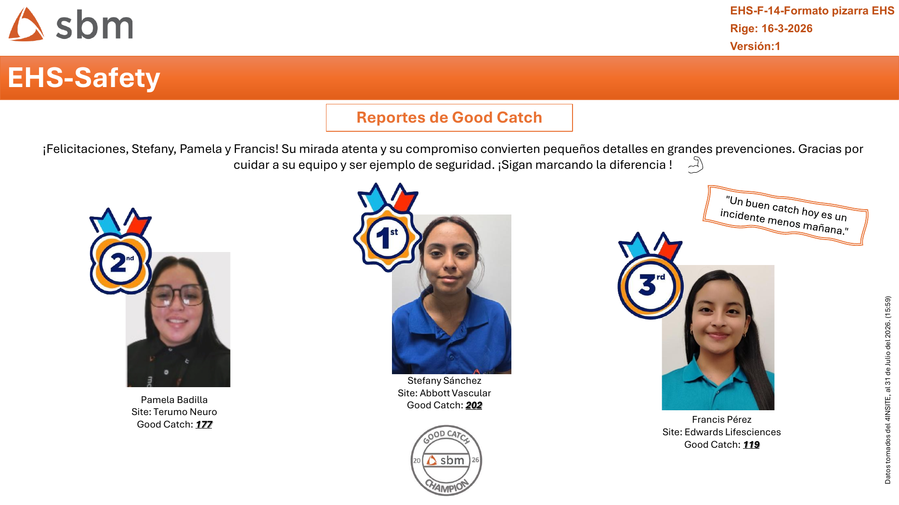
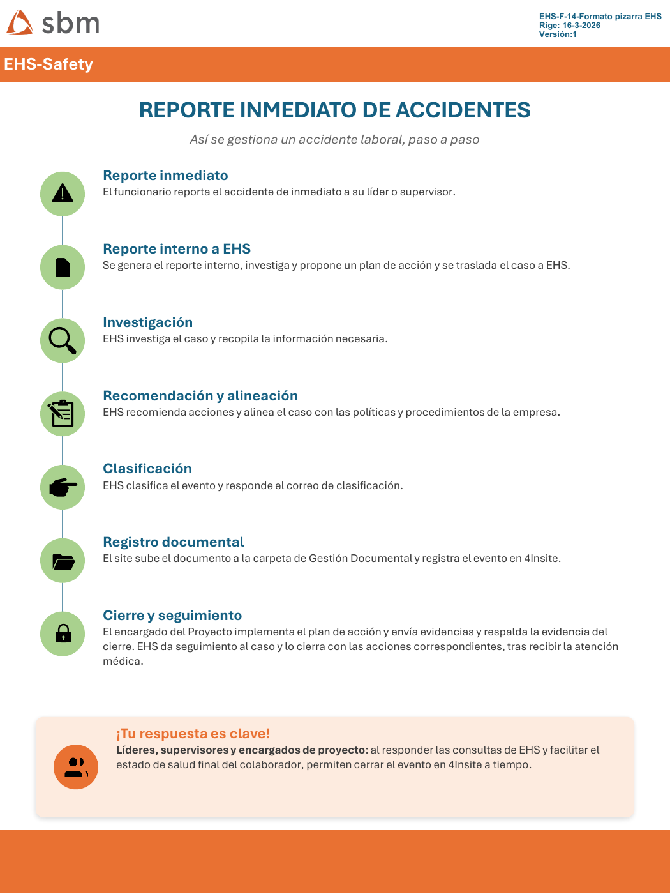
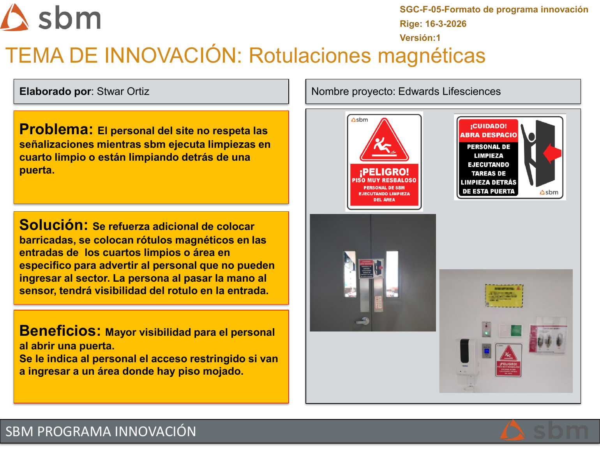
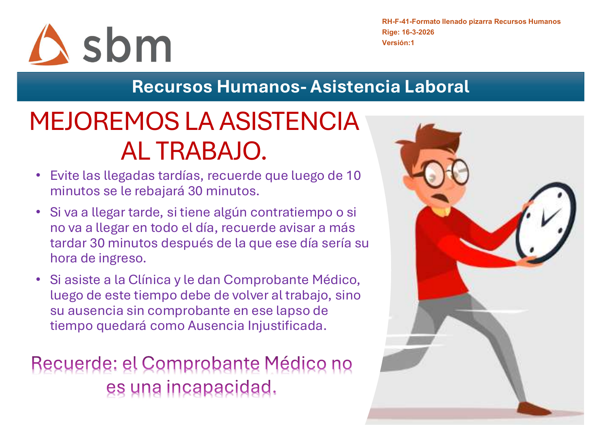
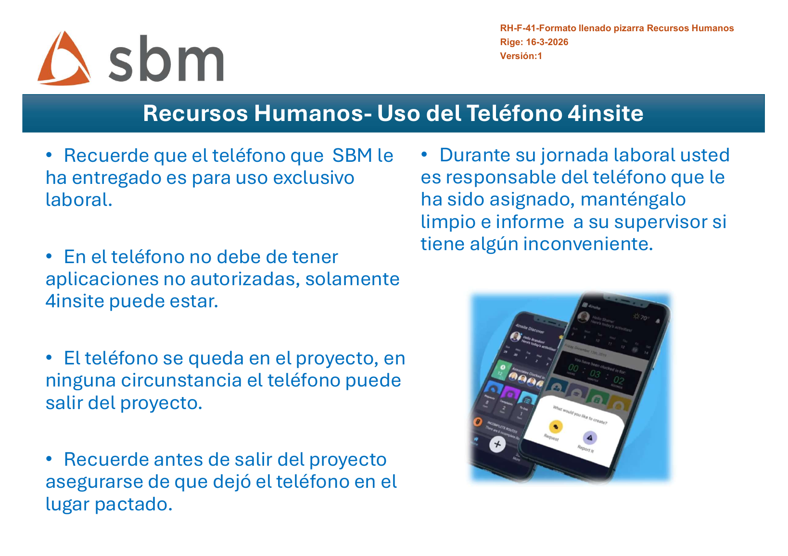
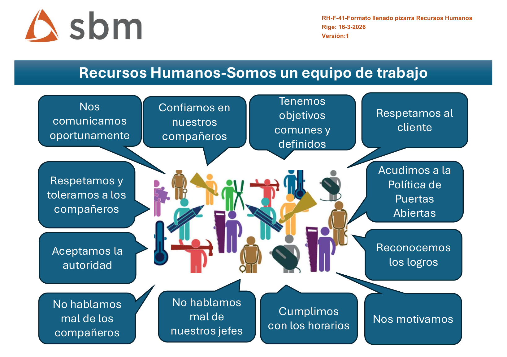
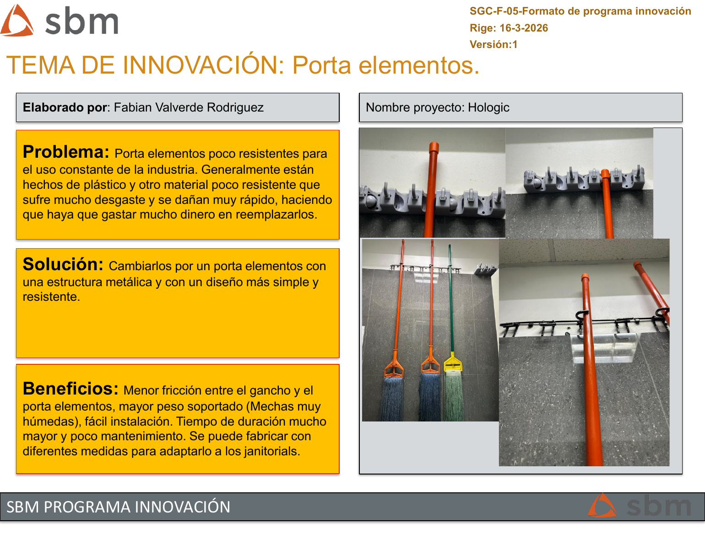

Edición mensual
Agosto 2026
Tu fuente de información, nuestro compromiso.
Entérate de las noticias, logros y novedades que nos mantienen conectados y avanzando juntos.
SBMConectaAgosto 2026
Noticias que construyen un mejor lugar para trabajar

Lo más importante
Destacados de agosto

EHS
Reporte inmediato de accidentes
Conozca el flujo desde el reporte inicial hasta el cierre y seguimiento del caso.
Reconocimiento
Good Catch destacados
Stefany Sánchez, Pamela Badilla y Francis Pérez fueron reconocidas por su compromiso con la prevención.

Innovación
Rotulaciones magnéticas
Una solución para mejorar la visibilidad y restringir el acceso a áreas donde se realizan limpiezas.
Seguridad primero
EHS - Safety
13días sin accidentes registrables
RO10
NWR13
FA0
REC1
Así se gestiona un accidente laboral
- Reporte inmediatoEl funcionario informa de inmediato a su líder o supervisor.
- Reporte interno e investigaciónSe documenta el caso, se propone un plan de acción y EHS recopila la información.
- Clasificación y registroEHS clasifica el evento y el site registra la documentación en Gestión Documental y 4Insite.
- Cierre y seguimientoEl proyecto implementa las acciones, entrega evidencias y EHS formaliza el cierre.
Información para el equipo
Recursos Humanos

Asistencia laboral
Recordatorios sobre puntualidad, avisos y comprobantes médicos.

Uso del teléfono 4Insite
Lineamientos para el uso, resguardo y cuidado del dispositivo asignado.

Somos un equipo
Respeto, comunicación, objetivos comunes, reconocimiento y cumplimiento.
Política integrada
Procesos, indicadores, disciplina documental, responsabilidades, mejora continua y seguimiento de métricas.
¿Qué hacer ante un problema?
Todo colaborador tiene derecho a expresar inquietudes y solicitar ayuda en áreas comunes o cuartos limpios.
Incidente en cuarto limpio
Detenga el trabajo, informe al supervisor y nunca manipule materiales o producto terminado del cliente.
Ideas que mejoran el trabajo
Programa de Innovación
Edwards Lifesciences
Rotulaciones magnéticas
Problema: señalizaciones poco visibles durante limpiezas en cuartos limpios o detrás de puertas.
Solución: rótulos magnéticos en entradas y accesos específicos para advertir y restringir el ingreso.

Hologic
Porta elementos metálico
Problema: los soportes plásticos se desgastan y deben reemplazarse con frecuencia.
Solución: estructura metálica más resistente, adaptable y de bajo mantenimiento.
Material original